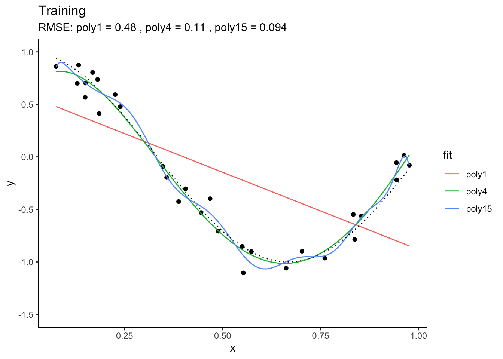
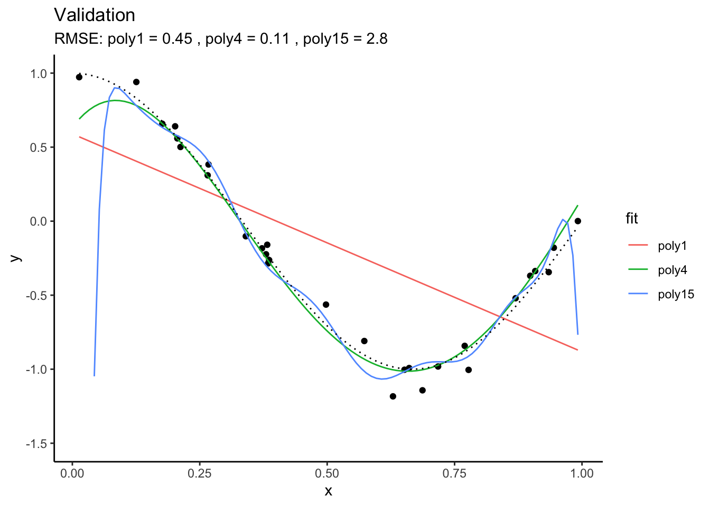
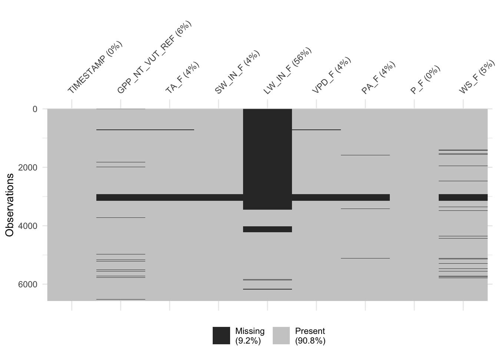

library(dplyr)
library(ggplot2)
library(readr)
library(tidyr)
library(caret)
library(recipes)10 Supervised machine learning I
Chapter lead author: Benjamin Stocker
10.1 Learning objectives
Machine learning may appear magical. The ability of machine learning algorithms to detect patterns and make predictions is fascinating. However, several challenges have to be met in the process of formulating, training, and evaluating the models. In this and the next (Chapter 11), we will discuss some basics of supervised machine learning and how to achieve best predictive results.
Basic steps of the implementation of supervised machine learning are introduced, including data splitting, pre-processing, model formulation, and the implementation of these steps using the {caret} and {recipes} R packages. A focus is put on learning the concept of the bias-variance trade-off and overfitting.
Contents of this Chapter are inspired and partly adopted by the excellent book Hands-On Machine Learning in R by Boehmke & Greenwell.
10.2 Setup
In this Chapter, we will need the following libraries
10.3 Tutorial
10.3.1 What is supervised machine learning?
Supervised machine learning is a type of machine learning where the model is trained using labeled data and the goal is to predict the output for new, unseen data. This corresponds to the approach of model fitting that we’ve seen in Chapter 9. In contrast, unsupervised machine learning is a type of machine learning where the algorithms learn from data without being provided with labeled targets. The algorithms aim to identify patterns and relationships in the data without any guidance. Examples include clustering and dimensionality reduction.
In supervised machine learning, we use a set of predictors \(X\) (also known as features, or independent variables) and observed values of a target variable \(Y\) that are recorded in parallel, to find a model \(f(X) = \hat{Y}\) that yields a good match between \(Y\) and \(\hat{Y}\) and that can be used for reliably predicting \(Y\) for new (“unseen”) data points \(X_\text{new}\) - data that has not been used during model fitting/training. The hat on \(\hat{Y}\) denotes an estimate. Some algorithms can even handle predictions of multiple target variables simultaneously (e.g., neural networks).
From above definitions, we can note a few key ingredients of supervised machine learning:
- Input data (predictors)
- Target data recorded in parallel with predictors
- A model that estimates \(f(X) = \hat{Y}\), made of mathematical operations relating \(X\) to \(\hat{Y}\) and of model parameters (coefficients) that are calibrated to yield the best match of \(Y\) and \(\hat{Y}\)
- A metric measuring how good the match between \(Y\) and \(\hat{Y}\) is - the loss function
- An algorithm (the optimiser) to find the best set of parameters that minimize the loss
The type of modelling approach of supervised machine learning is very similar to fitting regression models as we did in Chapter 9. In a sense, supervised machine learning is just another empirical (or statistical) modelling approach. However, you may not want to call linear regression a machine learning algorithm because there is no iterative learning involved. Furthermore, machine learning differs from traditional statistical modelling methods in that it makes no assumptions regarding the data generation process and underlying distributions (Breiman, 2001).
Nevertheless, contrasting a bivariate linear regression model with a complex machine learning algorithm is instructive. Also linear regression provides a prediction \(\hat{Y} = f(X)\), just like other (proper) machine learning algorithms do. The functional form of a bivariate linear regression is not particularly flexible (just a straight line for the best fit between predictors and targets) and it has only two parameters (slope and intercept). At the other extreme are, for example, deep neural networks. They are extremely flexible, can learn highly non-linear relationships and deal with interactions between a large number of predictors. They also contain very large numbers of parameters (typically on the order of \(10^4 - 10^7\)). You can imagine that their high flexibility allows these types of algorithms to very effectively learn from the data, but also bears the risk of overfitting. What is overfitting?
10.3.2 Overfitting
This example is based on this example from scikit-learn.
Let’s assume that there is some true underlying relationship between a single predictor \(X\) and the target variable \(Y\). We don’t know this relationship and the observations contain a (normally distributed) error. Based on our training data, we fit three polynomial models that differ with respect to their complexity. We fit a polynomial of degree 1, 4, and 15 to the observations. A polynomial of degree \(N\) is given by: \[ y = \sum_{n=0}^N a_n x^n \] \(a_n\) are the coefficients, i.e., model parameters. The goal of the training is to find the coefficients \(a_n\) so that the predicted \(\hat{Y}\) fits observed \(Y\) best. From the above definition, the polynomial of degree 15 has 16 parameters, while the polynomial of degree 1 has two parameters (and corresponds to a simple bivariate linear regression). You can imagine that the polynomial of degree 15 is much more flexible and should thus yield the closest fit to the training data. This is indeed the case.

We can use the same fitted models on data that was not used for model fitting - the test data. This is what’s done below. Again, the same true underlying relationship is used, but we sample a new set of data points \(X_\text{new}\) and add a new sample of errors on top of the true relationship.

You see that, using the test set, we find that “poly4” actually performs best - it has a much lower RMSE than “poly15”. Apparently, “poly15” was overfitted. Apparently, it used its flexibility to fit not only the shape of the true underlying relationship, but also the observation errors on top of it. This has the implication that, when this model is used for making predictions for data that was not used for training, it will yield misguided predictions that are affected by the errors in the training set. This is the reason why “poly15” performed worse on the test set than the other models.
From the figures above, we can also conclude that “poly1” was underfitted - it performed worse than “poly4” also on the validation set.
The out-of-sample performance of “poly15” gets even worse when applying the fitted polynomial models to data that extends beyond the range in \(X\) that was used for model training. Here, we’re extending just 20% to the right.
You see that the RMSE for “poly15” literally explodes. The model is hopelessly overfitted and completely useless for prediction, although it looked like it fitted the data best when we considered only the training results. This is a fundamental challenge in machine learning - finding the model with the best generalisability. That is, a model that not only fits the training data well, but also performs well on unseen data.
The phenomenon of fitting and overfitting as a function of the model complexity is also referred to as the bias-variance trade-off. The bias describes how well a model matches the training set (average error). A model with low bias will match the data set closely and vice versa. The variance describes how much a model changes when you train it using different portions of your data set. “poly15” has a high variance. On the other extreme, “poly1” has a high bias. It’s not affected by the noise in observations, but its predictions are also far off the observations. In machine learning (as in all statistical modelling), we are challenged to balance this trade-off.
This Chapter and Chapter 11 introduce the methods for achieving the best model generalisability and find the sweet spot between high bias and high variance. One of the key steps of the machine learning modelling process is motivated by the example above: the separation of the data into a training and a testing set (data splitting). Only by withholding part of the data from the model training, we have a good basis for testing the model on that unseen data for evaluating its generalisability. Additional steps that may be required or beneficial for effective model training and their implementation in R are introduced in this and the next Chapter. Depending on your application or research question, it may also be of interest to evaluate the relationships embodied in \(f(X)\) or to quantify the importance of different predictors in our model. This is referred to as model interpretation and is not (currently) included in this book.
Of course, a plethora of algorithms exist that do the job of \(Y = f(X)\). Each of them has its own strengths and limitations. It is beyond the scope of this course to introduce a larger number of machine learning algorithms. For illustration purposes in this chapter, we will use and introduce the K-nearest-Neighbors (KNN) algorithm and compare its performance to a multivariate linear regression for illustration purposes. Chapter 12 introduces Random Forest.
10.3.3 Data and the modelling challenge
We’re returning to ecosystem flux data that we’ve used in Chapter 4 and Chapter 5. Here, we’re using daily data from the evergreen site in Davos, Switzerland (CH-Dav) to avoid effects of seasonally varying foliage cover for which the data does not contain information. To address such additional effects, we would have to, for example, combine the flux and meteorological data with remotely sensed surface greenness data.
The data set FLX_CH-Dav_FLUXNET2015_FULLSET_DD_1997-2014_1-3.csv contains a time series of the ecosystem gross primary production (GPP) and a range of meteorological variables, measured in parallel. In this chapter, we formulate a model for predicting GPP from a set of covariates (other variables that vary in parallel, here the meteorological variables). This is to say that GPP_NT_VUT_REF is the target variable, and other variables that are available in our dataset are the predictors.
Let’s read the data, select suitable variables, interpret missing value codes, and select only good-quality data (where at least 80% of the underlying half-hourly data was good quality measured data, and not gap-filled).
daily_fluxes <- read_csv("./data/FLX_CH-Dav_FLUXNET2015_FULLSET_DD_1997-2014_1-3.csv") |>
# select only the variables we are interested in
dplyr::select(TIMESTAMP,
GPP_NT_VUT_REF, # the target
ends_with("_QC"), # quality control info
ends_with("_F"), # includes all all meteorological covariates
-contains("JSB") # weird useless variable
) |>
# convert to a nice date object
dplyr::mutate(TIMESTAMP = lubridate::ymd(TIMESTAMP)) |>
# set all -9999 to NA
mutate(across(where(is.numeric), ~na_if(., -9999))) |>
# retain only data based on >=80% good-quality measurements
# overwrite bad data with NA (not dropping rows)
dplyr::mutate(GPP_NT_VUT_REF = ifelse(NEE_VUT_REF_QC < 0.8, NA, GPP_NT_VUT_REF),
TA_F = ifelse(TA_F_QC < 0.8, NA, TA_F),
SW_IN_F = ifelse(SW_IN_F_QC < 0.8, NA, SW_IN_F),
LW_IN_F = ifelse(LW_IN_F_QC < 0.8, NA, LW_IN_F),
VPD_F = ifelse(VPD_F_QC < 0.8, NA, VPD_F),
PA_F = ifelse(PA_F_QC < 0.8, NA, PA_F),
P_F = ifelse(P_F_QC < 0.8, NA, P_F),
WS_F = ifelse(WS_F_QC < 0.8, NA, WS_F)) |>
# drop QC variables (no longer needed)
dplyr::select(-ends_with("_QC"))To reproduce this code chunk, you can download the file
FLX_CH-Dav_FLUXNET2015_FULLSET_DD_1997-2014_1-3.csvfrom here and read it from the local path where the file is stored on your machine. All data files used in this tutorials are stored here.
The steps above are considered data wrangling and are not part of the modelling process. After completing this tutorial, you will understand this distinction.
10.3.4 K-nearest neighbours
Before we start with the model training workflow, let’s introduce the K-nearest neighbour (KNN) algorithm. It serves the purpose of demonstrating the bias-variance trade-off. As the name suggests, KNN uses the \(k\) observations that are “nearest” to the new record for which we want to make a prediction. It then calculates their average (for regression) or most frequent value (for classification) and uses it as the prediction of the target value. “Nearest” is determined by some distance metric evaluated based on the values of the predictors. In our example (GPP_NT_VUT_REF ~ .), KNN would determine the \(k\) days (rows in a data frame) where conditions, given by our set of predictors, were most similar (nearest) to the day for which we seek a prediction. Then, it calculates the prediction as the average (mean) GPP value of these days. Determining “nearest” neighbors is commonly based on either the Euclidean or Manhattan distances between two data points \(X_a\) and \(X_b\), considering all \(P\) predictors \(j\).
Euclidean distance: \[ \sqrt{ \sum_{j=1}^P (X_{a,j} - X_{b,j})^2 } \\ \]
Manhattan distance: \[ \sum_{j=1}^P | X_{a,j} - X_{b,j} | \]
In two-dimensional space, the Euclidean distance measures the length of a straight line between two points (remember Pythagoras!). The Manhattan distance is called this way because it measures the distance you would have to walk to get from point \(a\) to point \(b\) in Manhattan, New York, where you cannot cut corners but have to follow a rectangular grid of streets. \(|x|\) is the absolute value of \(X\) ( \(|-x| = x\)).
KNN is a simple algorithm that uses knowledge of the “local” data structure for prediction. A drawback is that the model “training” has to be done for each prediction step and the computation time of the training increases with \(x \times p\). KNNs are often used, for example, to impute values (fill missing values, see also below) and have the advantage that predicted values are always within the range of observed values of the target variable.
10.3.5 Model formulation
The aim of supervised machine learning is to find a model \(\hat{Y} = f(X)\) so that \(\hat{Y}\) agrees well with observations \(Y\). We typically start with a research question where \(Y\) is given - naturally - by the problem we are addressing and we have a data set at hand where one or multiple predictors (or “features”) \(X\) are recorded along with \(Y\). From our data, we have information about how GPP (ecosystem-level photosynthesis) depends on a set of abiotic factors, mostly meteorological measurements.
10.3.5.1 Formula notation
In R, it is common to use the formula notation to specify the target and predictor variables. You have encountered formulas before, e.g., for a linear regression using the lm() function. To specify a linear regression model for GPP_NT_VUT_REF with three predictors SW_IN_F, VPD_F, and TA_F, to be fitted to data daily_fluxes, we write:
lm(GPP_NT_VUT_REF ~ SW_IN_F + VPD_F + TA_F, data = daily_fluxes)10.3.5.2 The generic train()
The way we formulate a model can be understood as being independent of the algorithm, or engine, that takes care of fitting \(f(X)\). The R package {caret} provides a unified interface for using different machine learning algorithms implemented in separate packages. In other words, it acts as a wrapper for multiple different model fitting, or machine learning algorithms. This has the advantage that it unifies the interface - the way arguments are provided and outputs are returned. {caret} also provides implementations for a set of commonly used tools for data processing, model training, and evaluation. We’ll use {caret} here for model training with the function train(). Note however, that using a specific algorithm, which is implemented in a specific package outside {caret}, also requires that the respective package be installed and loaded. Using {caret} for specifying the same linear regression model as above, the base-R lm() function, can be done with {caret} in a generalized form as:
caret::train(
form = GPP_NT_VUT_REF ~ SW_IN_F + VPD_F + TA_F,
data = daily_fluxes |> drop_na(), # drop missing values
trControl = caret::trainControl(method = "none"), # no resampling
method = "lm"
)Linear Regression
2729 samples
3 predictor
No pre-processing
Resampling: None Note the argument specified as trControl = trainControl(method = "none"). This suppresses the default approach to model fitting in {caret} - to resample using bootstrapping. More on that in Chapter 11. Note also that we dropped all rows that contained at least one missing value - necessary to apply the least squares method for the linear regression model fitting. It’s advisable to apply this data removal step only at the very last point of the data processing and modelling workflow. Alternative algorithms may be able to deal with missing values and we want to avoid losing information along the workflow.
Of course, it is an overkill to write this as in the code chunk above compared to just writing lm(...). The advantage of the unified interface is that we can simply replace the method argument to use a different model fitting algorithm. For example, to use KNN, we just can write:
caret::train(
form = GPP_NT_VUT_REF ~ SW_IN_F + VPD_F + TA_F,
data = daily_fluxes |> drop_na(),
trControl = caret::trainControl(method = "none"),
method = "knn"
)k-Nearest Neighbors
2729 samples
3 predictor
No pre-processing
Resampling: None 10.3.6 Data splitting
The introductory example demonstrated the importance of validating the fitted model with data that was not used for training. Thus, we can test the model’s generalisability to new (“unseen”) data. The essential step that enables us to assess the model’s generalization error is to hold out part of the data from training and set it aside (leaving it absolutely untouched!) for testing.
There is no fixed rule for how much data are to be used for training and testing, respectively. We have to balance a trade-off:
- Spending too much data for training will leave us with too little data for testing and the test results may not be robust. In this case, the sample size for getting robust validation statistics is not sufficiently large and we don’t know for sure whether we are safe from an over-fit model.
- Spending too much data for validation will leave us with too little data for training. In this case, the machine learning algorithm may not be successful at finding real relationships due to insufficient amounts of training data.
Typical splits are between 60-80% for training. However, in cases where the number of data points is very large, the gains from having more training data are marginal, but come at the cost of adding to the already high computational burden of model training.
In environmental sciences, the number of predictors is often smaller than the sample size (\(p < n\)), because it is typically easier to collect repeated observations of a particular variable than to expand the set of variables being observed. Nevertheless, in cases where the number \(p\) gets large, it is important, and for some algorithms mandatory, to maintain \(p < n\) for model training.
An important aspect to consider when splitting the data is to make sure that all “states” of the system for which we have data are well represented in training and testing sets. A particularly challenging case is posed when it is of particular interest that the algorithm learns relationships \(f(X)\) under rare conditions \(X\), for example meteorological extreme events. If not addressed with particular measures, model training tends to achieve good model performance for the most common conditions. A simple way to put more emphasis for model training on extreme conditions is to compensate by sampling overly proportional from such cases for the training data set.
Several alternative functions for the data splitting step are available from different packages in R. We use the the rsample package here as it allows to additionally make sure that data from the full range of a given variable’s values (VPD_F in the example below) are well covered in both training and testing sets.
set.seed(123) # for reproducibility
split <- rsample::initial_split(daily_fluxes, prop = 0.7, strata = "VPD_F")
daily_fluxes_train <- rsample::training(split)
daily_fluxes_test <- rsample::testing(split)Plot the distribution of values in the training and testing sets.
plot_data <- daily_fluxes_train |>
dplyr::mutate(split = "train") |>
dplyr::bind_rows(daily_fluxes_test |>
dplyr::mutate(split = "test")) |>
tidyr::pivot_longer(cols = 2:9, names_to = "variable", values_to = "value")
plot_data |>
ggplot(aes(x = value, y = ..density.., color = split)) +
geom_density() +
facet_wrap(~variable, scales = "free")10.3.7 Pre-processing
Data pre-processing is aimed at preparing the data for use in a specific model fitting procedure and at improving the effectiveness of model training. The splitting of the data into a training and test set makes sure that no information from the test set is used during or before model training. It is important that absolutely no information from the test set finds its way into the training set (data leakage).
In a general sense, pre-processing involve data transformations where the transformation functions use parameters that are determined on the data itself. Consider, for example, the standardization. That is, the linear transformation of a vector of values to have zero mean (data is centered, \(\mu = 0\)) and a standard deviation of 1 (data is scaled to \(\sigma = 1\)). In order to avoid data leakage, the mean and standard deviation have to be determined on the training set only. Then, the normalization of the training and the test sets both use the set of (\(\mu, \sigma\)) determined on the training set. Data leakage would occur if the (\(\mu, \sigma\)) would be determined on data containing values from the test set.
Often, multiple splits of the data are considered during model training. Hence, an even larger number of data transformation parameters (\(\mu, \sigma\) in the example of normalization) have to be determined and transformations applied to the multiple splits of the data. {caret} deals with this for you and the transformations do not have to be “manually” applied before applying the train() function call. Instead, the data pre-processing is considered an integral step of model training and instructions are specified as part of the train() function call and along with the un-transformed data.
The {recipes} package provides an even more powerful way for specifying the formula and pre-processing steps in one go. It is compatible with the train() function of {caret}. For the same formula as above, and an example where the data daily_fluxes_train is to be normalized (centered and scaled), we can specify a “recipe” using the pipe operator as:
pp <- recipes::recipe(GPP_NT_VUT_REF ~ SW_IN_F + VPD_F + TA_F, data = daily_fluxes_train) |>
recipes::step_center(recipes::all_numeric(), -recipes::all_outcomes()) |>
recipes::step_scale(recipes::all_numeric(), -recipes::all_outcomes())The first line with the recipe() function call assigns roles to the different variables. GPP_NT_VUT_REF is an outcome (in “{recipes} speak”). Then, we used selectors to apply the recipe step to several variables at once. The first selector, all_numeric(), selects all variables that are either integers or real values. The second selector, -all_outcomes() removes any outcome (target) variables from this recipe step. The returned object pp does not contain a normalized version of the data frame daily_fluxes_train, but rather the information that allows us to apply a specific set of pre-processing steps also to any other data set.
The object pp can then be supplied to train() as its first argument:
caret::train(
pp,
data = daily_fluxes_train,
method = "knn",
trControl = caret::trainControl(method = "none")
)The example above showed data standardization as a data pre-processing step. Data pre-processing may be done with different aims, as described in sub-sections below.
10.3.7.1 Standardization
Several algorithms explicitly require data to be standardized so that values of all predictors vary within a comparable range. The necessity of this step becomes obvious when considering KNN, where the magnitude of the distance is strongly influenced by the order of magnitude of the predictor values. Here are the ranges and quantiles of the available variables.
daily_fluxes |>
summarise(across(where(is.numeric), ~quantile(.x, probs = c(0, 0.25, 0.5, 0.75, 1), na.rm = TRUE))) |>
t() |>
as_tibble(rownames = "variable") |>
setNames(c("variable", "min", "q25", "q50", "q75", "max"))# A tibble: 8 × 6
variable min q25 q50 q75 max
<chr> <dbl> <dbl> <dbl> <dbl> <dbl>
1 GPP_NT_VUT_REF -4.23 0.773 2.87 5.45 12.3
2 TA_F -21.9 -1.47 3.51 8.72 20.7
3 SW_IN_F 3.30 77.8 135. 214. 366.
4 LW_IN_F 138. 243. 279. 308. 365.
5 VPD_F 0.001 0.959 2.23 4.06 16.6
6 PA_F 80.4 83.2 83.7 84.1 85.6
7 P_F 0 0 0 1.6 92.1
8 WS_F 0.405 1.56 1.93 2.34 6.54We see for example, that typical values of LW_IN_F are by a factor 100 larger than values of VPD_F. A distance calculated based on these raw values would therefore be strongly dominated by the difference in LW_IN_F values, and differences in VPD_F would hardly affect the distance. Therefore, the data must be standardized before using it with the KNN algorithm (and other algorithms, including Neural Networks). Standardization is done to each variable separately, by centering and scaling each to have \(\mu = 0\) and \(\sigma = 1\).
The steps for centering and scaling using the recipes package are described above.
Standardization can be done not only by centering and scaling (as described above), but also by scaling to within range, where values are scaled such that the minimum value within each variable (column) is 0 and the maximum is 1.
As seen above for the feature engineering example, the object pp does not contain a standardized version of the data frame daily_fluxes_train, but rather the information that allows us to apply the same standardization also to other data. In other words, recipe(..., data = daily_fluxes_train) |> step_center(...) |> step_scale(...) doesn’t actually transform daily_fluxes_train. There are two more steps involved to get there. This might seem bothersome at first but their separation is critical in the context of model training and data leakage, and translates the conception of the pre-processing as a “recipe” into the way we write the code.
To actually transform the data, we first have to “prepare” the recipe:
pp_prep <- recipes::prep(pp, training = daily_fluxes_train) Finally we can actually transform the data. That is, “juice” the prepared recipe.
daily_fluxes_juiced <- recipes::juice(pp_prep)Note, if we are to apply the prepared recipe to new data, we’ll have to bake() it.
daily_fluxes_baked <- recipes::bake(pp_prep, new_data = daily_fluxes_train)
# confirm that juice and bake return identical objects when given the same data
all_equal(daily_fluxes_juiced, daily_fluxes_baked)Warning: `all_equal()` was deprecated in dplyr 1.1.0.
ℹ Please use `all.equal()` instead.
ℹ And manually order the rows/cols as needed[1] TRUEThe effect is of standardization is illustrated by comparing original and transformed variables:
# prepare data for plotting
plot_data_original <- daily_fluxes_train |>
dplyr::select(one_of(c("SW_IN_F", "VPD_F", "TA_F"))) |>
tidyr::pivot_longer(cols = c(SW_IN_F, VPD_F, TA_F), names_to = "var", values_to = "val")
plot_data_juiced <- daily_fluxes_juiced |>
dplyr::select(one_of(c("SW_IN_F", "VPD_F", "TA_F"))) |>
tidyr::pivot_longer(cols = c(SW_IN_F, VPD_F, TA_F), names_to = "var", values_to = "val")
# plot density
plot_1 <- ggplot(data = plot_data_original, aes(val, ..density..)) +
geom_density() +
facet_wrap(~var)
# plot density by var
plot_2 <- ggplot(data = plot_data_juiced, aes(val, ..density..)) +
geom_density() +
facet_wrap(~var)
# combine both plots
cowplot::plot_grid(plot_1, plot_2, nrow = 2)10.3.7.2 Handling missing data
Several machine learning algorithms require missing values to be removed. That is, if any of the cells in one row has a missing value, the entire cell gets removed. This can lead to severe data loss. In cases where missing values appear predominantly in only a few variables, it may be advantageous to drop the affected variable from the data for modelling. In other cases, it may be advantageous to fill missing values (data imputation, see next section). Although such imputed data is “fake”, it may be preferred to impute values than to drop entire rows and thus get the benefit of being able to use the information contained in available (real) values of affected rows. Whether or not imputation is preferred should be determined based on the model skill for an an out-of-sample test (more on that later).
Visualizing missing data is the essential first step in making decisions about dropping rows with missing data versus removing predictors from the model (which would imply too much data removal).
visdat::vis_miss(
daily_fluxes,
cluster = FALSE,
warn_large_data = FALSE
)
Here, the variable LW_IN_F (longwave radiation) if affected by a lot of missing data. Note that we applied a data cleaning step along with the data read-in at the very top of this Chapter. There, we applied a filtering criterion where values are only retained if at least 80% of the underlying half-hourly data is actual measured (and not gap-filled) data. Whether to drop the variable for further modelling should be informed also by our understanding of the data and the processes relevant for the modelling task. Here, the modelling target is GPP and the carbon cycle specialists among the readers may know that longwave radiation is not a known important control on GPP (ecosystem photosynthesis). Therefore, we may consider dropping this variable from the dataset for our modelling task. The remaining variables are affected by less frequent missingness with which we will deal otherwise.
10.3.7.3 Imputation
Imputation refers to the replacement of missing values with with a “best guess” value (Boehmke and Greenwell). Different approaches exist for determining that best guess. The most basic approach is to impute missing values with the mean or median of the available values of the same variable, which can be implemented using step_impute_*() from the {recipes} package. For example, to impute the median for all predictors separately:
pp |>
step_impute_median(all_predictors())Imputing by the mean or median is “uninformative”. We may use information about the co-variation of multiple variables for imputing missing values. For example, for imputing missing VPD values, we may consider the fact that VPD tends to be high when air temperature is high. Therefore, missing VPD values can be modeled as a function of other co-variates (predictors). Several approaches to modelling missing values are available through the {recipes} package (see here). For example, we can use KNN with five neighbors as:
pp |>
step_impute_knn(all_predictors(), neighbors = 5)10.3.7.4 One-hot encoding
For machine learning algorithms that require that all predictors be numerical (e.g., neural networks, or KNN), categorical predictors have to be pre-processed and converted into new numerical predictors. The most common such transformation is one-hot encoding, where a categorical predictor variable that has \(N\) levels is replaced by \(N\) new variables that contain either zeros or ones depending whether the value of the categorical feature corresponds to the respective column. Because this creates perfect collinearity between these new column, we can also drop one of them. This is referred to as dummy encoding. The example below demonstrates what one-hot encoding does.
# original data frame
df <- tibble(id = 1:4, color = c("red", "red", "green", "blue"))
df# A tibble: 4 × 2
id color
<int> <chr>
1 1 red
2 2 red
3 3 green
4 4 blue # after one-hot encoding
dmy <- dummyVars("~ .", data = df, sep = "_")
data.frame(predict(dmy, newdata = df)) id colorblue colorgreen colorred
1 1 0 0 1
2 2 0 0 1
3 3 0 1 0
4 4 1 0 0Note that in a case where color is strictly one of c("red", "red", "green", "blue") (and not, for example, "yellow"), then one of the columns added by dummyVars() is obsolete (if it’s neither "red", nor "green", it must be "blue") - columns are collinear. This can be avoided by setting fullRank = FALSE.
Using the recipes package, one-hot encoding is implemented by:
recipe(GPP_NT_VUT_REF ~ ., data = daily_fluxes) |>
step_dummy(all_nominal(), one_hot = TRUE)10.3.7.5 Zero-variance predictors
Sometimes, the data generation process yields variables that have the same value in each observation. And sometimes this is due to failure of the measurement device or some other bug in the data collection pipeline. Either way, this may cause some algorithms to crash or become unstable. Such “zero-variance” predictors are usually removed altogether. The same applies also to variables with “near-zero variance”. That is, variables where only a few unique values occur with a high frequency in the entire data set. The danger is that, when data is split into training and testing sets, the variable may effectively become a “zero-variance” variable within the training subset.
We can test for zero-variance or near-zero variance predictors by quantifying the following metrics:
- Frequency ratio: Ratio of the frequency of the most common predictor over the second most common predictor. This should be near 1 for well-behaved predictors and get very large for problematic ones.
- Percent unique values: The number of unique values divided by the total number of rows in the data set (times 100). For problematic variables, this ratio gets small (approaches 1/100).
The function nearZeroVar of the {caret} package flags suspicious variables (zeroVar = TRUE or nzv = TRUE). In our data set, we don’t find any:
caret::nearZeroVar(daily_fluxes, saveMetrics = TRUE) freqRatio percentUnique zeroVar nzv
TIMESTAMP 1.000000 100.000000 FALSE FALSE
GPP_NT_VUT_REF 1.000000 93.732887 FALSE FALSE
TA_F 1.000000 83.951932 FALSE FALSE
SW_IN_F 1.500000 95.375723 FALSE FALSE
LW_IN_F 1.000000 43.170064 FALSE FALSE
VPD_F 1.142857 60.450259 FALSE FALSE
PA_F 1.090909 37.906906 FALSE FALSE
P_F 10.268072 5.978096 FALSE FALSE
WS_F 1.083333 34.758138 FALSE FALSEUsing the recipes package, we can add a step that removes zero-variance predictors by:
pp |>
step_zv(all_predictors())10.3.7.6 Target engineering
Target engineering refers to pre-processing of the target variable. Its application can enable improved predictions, particularly for models that make assumptions about prediction errors or when the target variable follows a “special” distribution (e.g., heavily skewed distribution, or where the target variable is a fraction that is naturally bounded by 0 and 1). A simple log-transformation of the target variable can often resolve issues with skewed distributions. An implication of a log-transformation is that errors in predicting values in the upper end of the observed range are “discounted” in their weight compared to errors in the lower range.
In our data set, the variable WS_F (wind speed) is skewed. The target variable that we have considered so far (GPP_NT_VUT_REF) is not skewed. In a case where we would consider WS_F to be our target variable, we would thus consider applying a log-transformation.
plot_1 <- ggplot(data = daily_fluxes, aes(x = WS_F, y = ..density..)) +
geom_histogram() +
labs(title = "Original")
plot_2 <- ggplot(data = daily_fluxes, aes(x = log(WS_F), y = ..density..)) +
geom_histogram() +
labs(title = "Log-transformed")
cowplot::plot_grid(plot_1, plot_2)Log transformation as part of the pre-processing is specified using the step_log() function, here applied to the model target variable (all_outcomes()).
recipes::recipe(WS_F ~ ., data = daily_fluxes) |> # it's of course non-sense to model wind speed like this
recipes::step_log(all_outcomes())A log-transformation doesn’t necessarily result in a perfect normal distribution of transformed values. The Box-Cox can get us closer. It can be considered a generalization of the log-transformation. Values are transformed according to the following function:
\[ y(\lambda) = \begin{cases} \frac{Y^\lambda-1}{\lambda}, &\; y \neq 0\\ \log(Y), &\; y = 0 \end{cases} \]
\(\lambda\) is treated as a parameter that is fitted such that the resulting distribution of values \(Y\) approaches the normal distribution. To specify a Box-Cox-transformation as part of the pre-processing, we can use step_BoxCox() from the {recipes} package.
pp <- recipes::recipe(WS_F ~ ., data = daily_fluxes_train) |>
recipes::step_BoxCox(all_outcomes())How do transformed values look like?
prep_pp <- recipes::prep(pp, training = daily_fluxes_train |> drop_na())
daily_fluxes_baked <- bake(prep_pp, new_data = daily_fluxes_test |> drop_na())
daily_fluxes_baked |>
ggplot(aes(x = WS_F, y = ..density..)) +
geom_histogram() +
labs(title = "Box-Cox-transformed")Note that the Box-Cox-transformation can only be applied to values that are strictly positive. In our example, wind speed (WS_F) is. If this is not satisfied, a Yeo-Johnson transformation can be applied.
recipes::recipe(WS_F ~ ., data = daily_fluxes) |>
recipes::step_YeoJohnson(all_outcomes())10.3.8 Putting it all together (half-way)
Let’s recap. We have a dataset daily_fluxes and we want to predict ecosystem GPP (GPP_NT_VUT_REF) from a set of predictors - environmental covariates that were measured in parallel to GPP. Let’s compare the performance of a multivariate linear regression and KNN model in terms of its generalisation to data that was not used for model fitting. The following pieces are implemented:
- Missing data: We’ve seen that the predictor
LW_IN_Fhas lots of missing values and - given a priori knowledge is not critical for predicting GPP and we’ll drop it. - Data cleaning: Data (
daily_fluxes) was cleaned based on quality control information upon reading the data at the beginning of this Chapter. Before modelling, we’re checking the distribution of the target value here again to make sure it is “well-behaved”. - Imputation: We drop rows with missing data for model training, instead of imputing them.
- Some of the predictors are distintively not normally distributed. Let’s Box-Cox transform all predictors as a pre-processing step.
- We have to standardize the data in order to use it for KNN.
- We have no variable where zero-variance was detected and we have no categorical variables that have to be transformed by one-hot encoding to be used in KNN.
- We use a data split, whithholding 30% for testing.
- Fit two models: a linear regression model and KNN.
- Take \(k=10\) for the KNN model. Other choices are possible and will affect the prediction error on the training and the testing data in different manners. We’ll learn more about the optimal choice of \(k\) (hyperparameter tuning) in the next chapter.
- Fit models to minimize the root mean square error (RMSE) between predictions and observations. More on the choice of the
metricargument intrain()(loss function) in the next chapter. - For the KNN model, use \(k=8\).
These steps are implemented by the code below.
# Data cleaning: looks ok, no obviously bad data
# no long tail, therefore no further target engineering
daily_fluxes |>
ggplot(aes(x = GPP_NT_VUT_REF, y = ..count..)) +
geom_histogram()# Data splitting
set.seed(1982) # for reproducibility
split <- rsample::initial_split(daily_fluxes, prop = 0.7, strata = "VPD_F")
daily_fluxes_train <- rsample::training(split)
daily_fluxes_test <- rsample::testing(split)
# Model and pre-processing formulation, use all variables but LW_IN_F
pp <- recipes::recipe(GPP_NT_VUT_REF ~ SW_IN_F + VPD_F + TA_F,
data = daily_fluxes_train |> drop_na()) |>
recipes::step_BoxCox(recipes::all_predictors()) |>
recipes::step_center(recipes::all_numeric(), -recipes::all_outcomes()) |>
recipes::step_scale(recipes::all_numeric(), -recipes::all_outcomes())
# Fit linear regression model
mod_lm <- caret::train(
pp,
data = daily_fluxes_train |> drop_na(),
method = "lm",
trControl = caret::trainControl(method = "none"),
metric = "RMSE"
)
# Fit KNN model
mod_knn <- caret::train(
pp,
data = daily_fluxes_train |> drop_na(),
method = "knn",
trControl = caret::trainControl(method = "none"),
tuneGrid = data.frame(k = 8),
metric = "RMSE"
)We can use the model objects mod_lm and mod_knn to add the fitted values to the training and the test data, both using the generic function predict(..., newdata = ...). The code below implements the prediction step, the measuring of the prediction skill, and the visualisation of predicted versus observed values on the test and training sets, bundled into one function - eval_model() - which we will re-use for each fitted model object.
# make model evaluation into a function to reuse code
eval_model <- function(mod, df_train, df_test){
# add predictions to the data frames
df_train <- df_train |>
drop_na()
df_train$fitted <- predict(mod, newdata = df_train)
df_test <- df_test |>
drop_na()
df_test$fitted <- predict(mod, newdata = df_test)
# get metrics tables
metrics_train <- df_train |>
yardstick::metrics(GPP_NT_VUT_REF, fitted)
metrics_test <- df_test |>
yardstick::metrics(GPP_NT_VUT_REF, fitted)
# extract values from metrics tables
rmse_train <- metrics_train |>
filter(.metric == "rmse") |>
pull(.estimate)
rsq_train <- metrics_train |>
filter(.metric == "rsq") |>
pull(.estimate)
rmse_test <- metrics_test |>
filter(.metric == "rmse") |>
pull(.estimate)
rsq_test <- metrics_test |>
filter(.metric == "rsq") |>
pull(.estimate)
# visualise as a scatterplot
# adding information of metrics as sub-titles
plot_1 <- ggplot(data = df_train, aes(GPP_NT_VUT_REF, fitted)) +
geom_point(alpha = 0.3) +
geom_smooth(method = "lm", se = FALSE, color = "red") +
geom_abline(slope = 1, intercept = 0, linetype = "dotted") +
labs(subtitle = bquote( italic(R)^2 == .(format(rsq_train, digits = 2)) ~~
RMSE == .(format(rmse_train, digits = 3))),
title = "Training set") +
theme_classic()
plot_2 <- ggplot(data = df_test, aes(GPP_NT_VUT_REF, fitted)) +
geom_point(alpha = 0.3) +
geom_smooth(method = "lm", se = FALSE, color = "red") +
geom_abline(slope = 1, intercept = 0, linetype = "dotted") +
labs(subtitle = bquote( italic(R)^2 == .(format(rsq_test, digits = 2)) ~~
RMSE == .(format(rmse_test, digits = 3))),
title = "Test set") +
theme_classic()
out <- cowplot::plot_grid(plot_1, plot_2)
return(out)
}
# linear regression model
eval_model(mod = mod_lm, df_train = daily_fluxes_train, df_test = daily_fluxes_test)
# KNN
eval_model(mod = mod_knn, df_train = daily_fluxes_train, df_test = daily_fluxes_test)It is advisable to keep workflow notebooks (this RMarkdown file) light and legible. Therefore, code chunks should not be excessively long and functions should be kept in a ./R/*.R file, which can be loaded. This also facilitates debugging code inside the function. Here, the function eval_model() is part of the book’s git repository, stored in the sub-directory ./R/, and used also in later chapters.
10.4 Exercises
There are no exercises with provided solutions for this Chapter.
10.5 Report Exercises
Comparison of the linear regression and KNN models
The figures above show the evaluation of the model performances of the linear regression and the KNN model, evaluated on the training and test set. This exercise is to interpret and understand the observed differences. Implement the following points:
- Adopt the code from this Chapter for fitting and evaluating the linear regression model and the KNN into your own RMarkdown file. Name the file
./vignettes/re_ml_01.Rmd. Keep larger functions in a separate file in an appropriate directory and load the function definition as part of the RMarkdown. - Interpret observed differences in the context of the bias-variance trade-off:
- Why is the difference between the evaluation on the training and the test set larger for the KNN model than for the linear regression model?
- Why does the evaluation on the test set indicate a better model performance of the KNN model than the linear regression model?
- How would you position the KNN and the linear regression model along the spectrum of the bias-variance trade-off?
- Visualise temporal variations of observed and modelled GPP for both models, covering all available dates.
The role of k
Let’s look at the role of \(k\) in a KNN. Answer the following questions:
Based on your understanding of KNN (and without running code), state a hypothesis for how the \(R^2\) and the MAE evaluated on the test and on the training set would change for \(k\) approaching 1 and for \(k\) approaching \(N\) (the number of observations in the data). Explain your hypothesis, referring to the bias-variance trade-off.
Put your hypothesis to the test! Write code that splits the data into a training and a test set and repeats model fitting and evaluation for different values for \(k\). Visualise results, showing model generalisability as a function of model complexity. Describe how a “region” of overfitting and underfitting can be determined in your visualisation. Write (some of your) code into a function that takes \(k\) as an input and and returns the MAE determined on the test set.
Is there an “optimal” \(k\) in terms of model generalisability? Edit your code to determine an optimal \(k\).
Add code and text for addressing this exercise to the file ./vignettes/re_ml_01.Rmd and give the notebook a suitable structure for easy navigation with a table of content (toc) by modifying its YAML header:
Important: to find an optimal \(k\), you will have to use daily data and not half-hourly data! Hint: Do not produce various of the “Training - Test” Figures shown above to find an optimal \(k\). Find a suitable plot that shows the optimal \(k\) (maybe you can find one in this or another Chapter…).
---
title: "Report Exercise Chapter 10"
author: "Ziggy Stardust"
output:
html_document:
toc: true
---Deliverables for the report
Present your solutions in a file called re_ml01.Rmd, save it in your vignettes folder alongside the HTML version, and make sure that your code is reproducible (make sure your .rmd is knittable, that all data is available, that paths to that data work, etc.).